Friend
Verse
En chat-app som bryter ned språkbarrierer i lagspill, slik at venner forstår hverandre uansett språk.
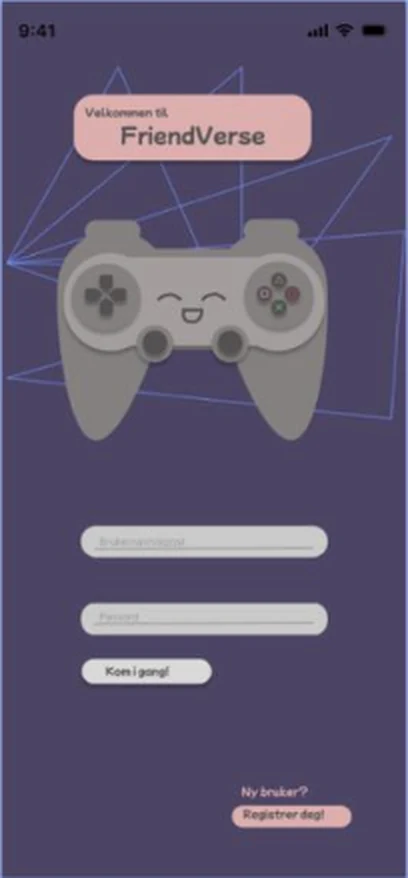
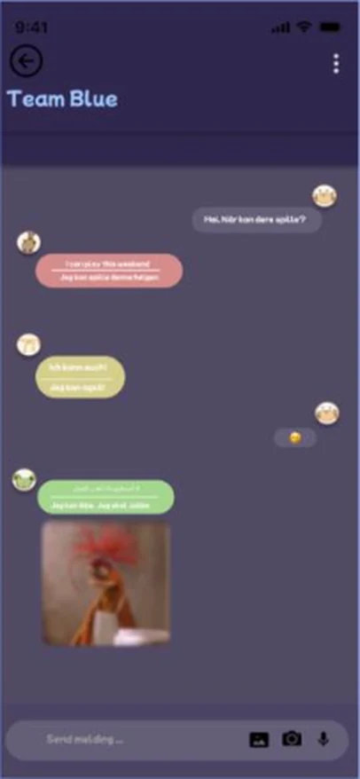
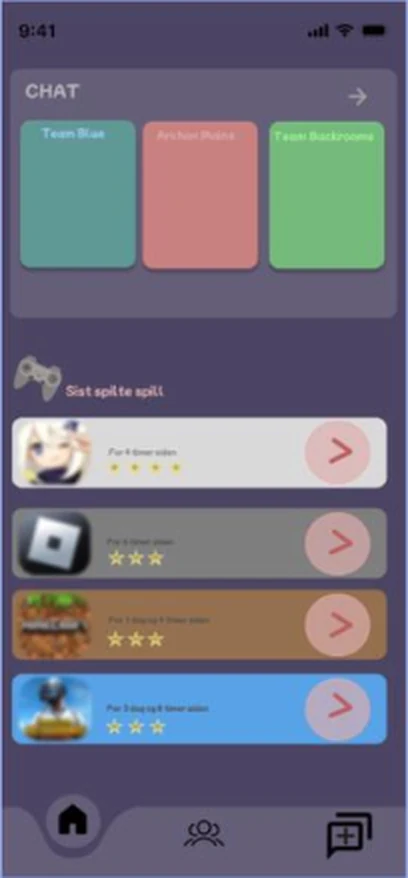
Inviter venner og lag et dream team!
FriendVerse er en chat-app for venner som spiller sammen, der meldinger oversettes til språket hver enkelt velger.
Innsikten viste at spillchatter er vanskelige å bruke, og at misforståelser oppstår når lagkamerater ikke deler språk. FriendVerse samler venner, team og chat på ett sted, med oversettelse bygget inn. Venner legges til med QR-kode eller friendcode.
Rolle, type & leveranse
Interaksjonsdesigner.
Innsikt, behov, wireframes og prototype.
Individuelt studentprosjekt.
IN1050, UiO, høsten 2023.
Lo-fi wireframes på papir.
Hi-fi-prototype i Figma, 7 skjermer.
Designprosessen
En iterativ prosess fra brukerinnsikt til prototype, der hvert steg bygget på det forrige.
-
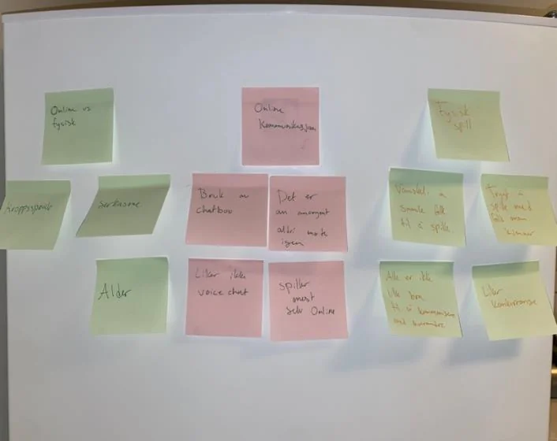
Innsikt
Pilotintervju og semistrukturert hovedintervju med en ung spiller. Rådataene analyserte jeg med åpen koding og affinitetsdiagram.
-
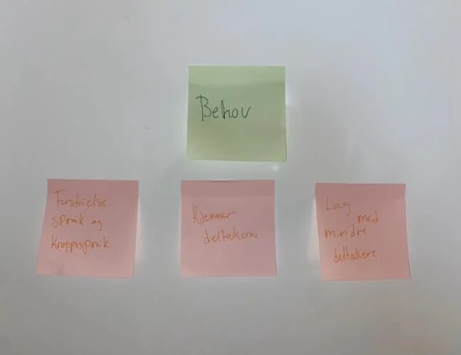
Behov
Analysen avdekket tre behov. Jeg prioriterte forståelse, gjorde det konkret med persona og scenario, og formulerte krav som enkelhet og tilgjengelighet.
-
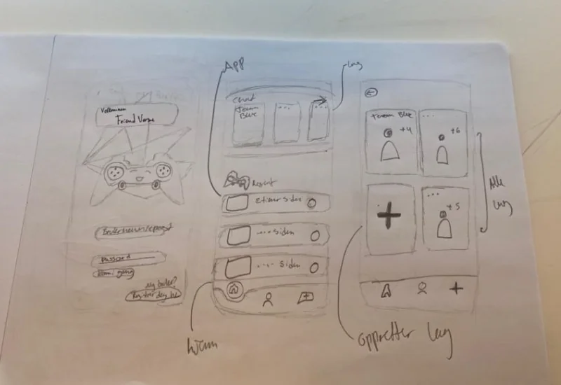
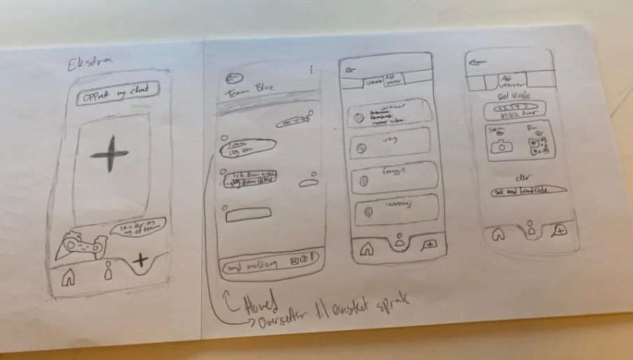
Wireframes
Lo-fi wireframes på papir for å utforske flyt og struktur: innlogging, hjem, team, chat og venner.
-
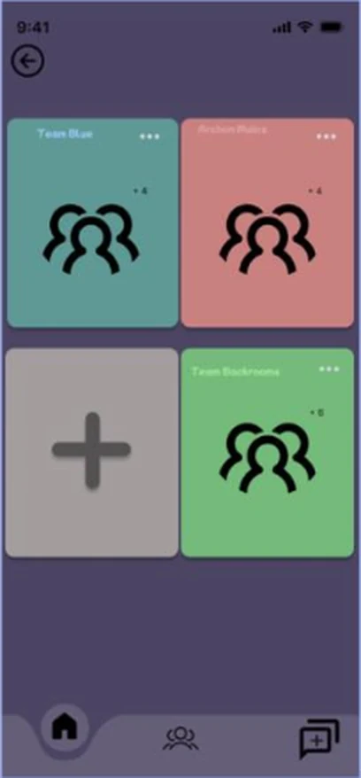
Prototype
Hi-fi-prototype i Figma, med eget visuelt uttrykk, maskot og navigasjon bygget på kjente mønstre.
Ferdig produkt
Velkomstskjermen introduserer maskoten og innloggingen. Hjemskjermen gir oversikt over chatter og sist spilte spill. Derfra kan brukeren samle venner i team, chatte med automatisk oversettelse og legge til venner med QR-kode eller friendcode.
- Velkommen
- Hjem
- Team
- Chat
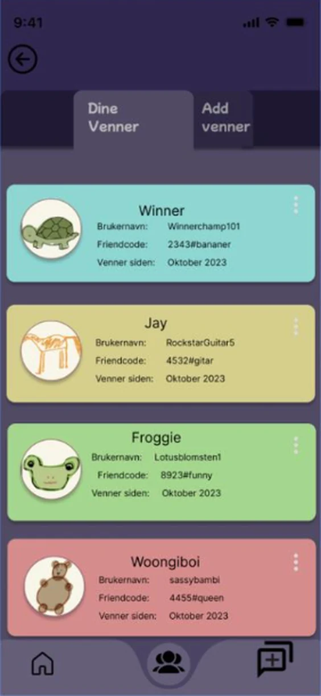
Venner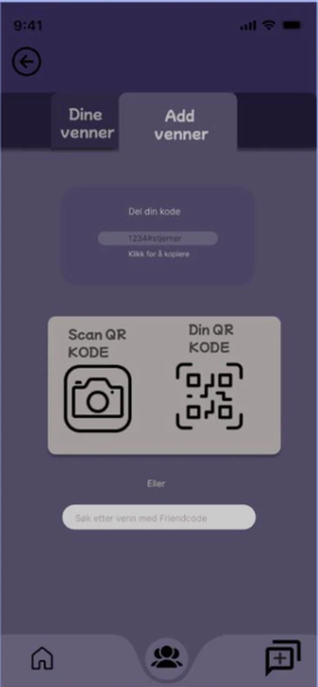
Legg til venn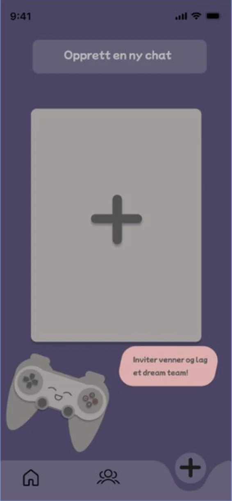
Ny chat
Designvalg
Kjente ikoner for hjem, venner og ny chat gjør funksjonen tydelig uten instruksjoner.
Navigasjonen ligger alltid nederst, med de samme ikonene på hver skjerm.
Kontrast og skygge viser hva som er trykkbart, og dempede farger gjør chatten behagelig å lese.
Utfordringer
Pilotintervjuet avdekket svake spørsmål
Det varte bare ti minutter, fordi spørsmålene var vanskelige å svare på. Jeg justerte intervjuguiden med mer åpne spørsmål om spillopplevelser, og fikk rikere data i hovedintervjuet.
Kontrast uten å slite på øynene
Lyse og mørke farger er krevende å kombinere. Dempede farger ga nok kontrast til å skille elementene, uten å bli slitsomt i lange chatter.
Læring
Gode designvalg starter med å forstå brukerens behov.
Prosjektet ga meg et grunnlag i interaksjonsdesign, med prinsipper som affordance, konsistens og synlighet. Jeg lærte å planlegge brukerundersøkelser og å jobbe iterativt, fra intervju og analyse til behov, krav, wireframes og prototype, for å avdekke hva brukeren faktisk trenger.